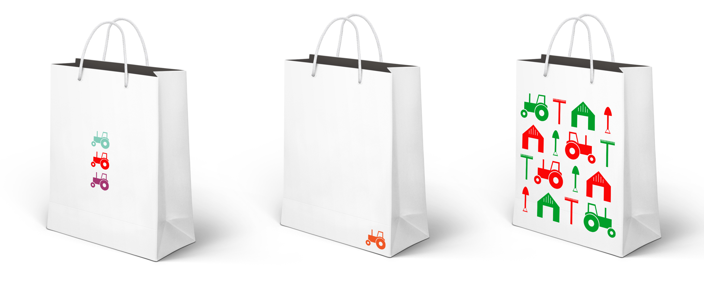
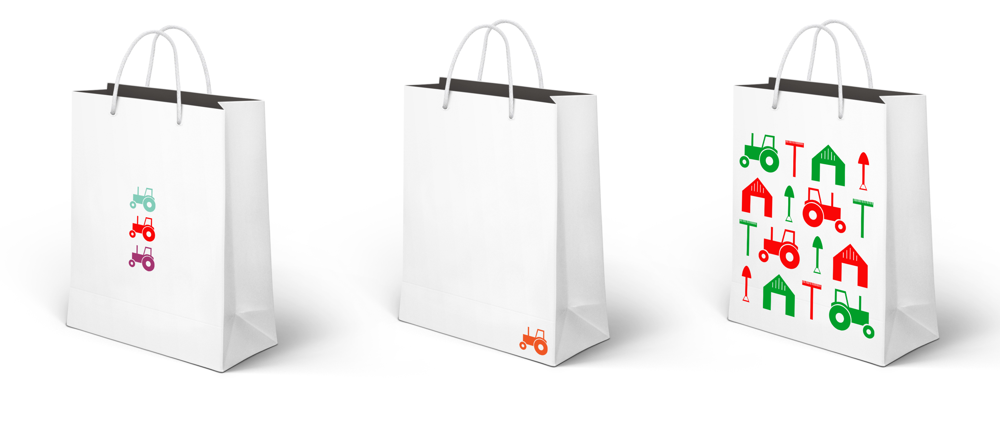

Blue Hill Rebranding
Branding concept for Blue Hill. Blue Hill, made famous by Dan Barber, is made up of Blue Hill NYC, Blue Hill Stone Barns, Blue Hill Farm and Blue Hill Market. The idea was to create a cohesive logos that could be easily recognized as being under the Blue Hill family. The restaurant logos(Stone Barns & New York City) referene the barn that guests walk through before dining.